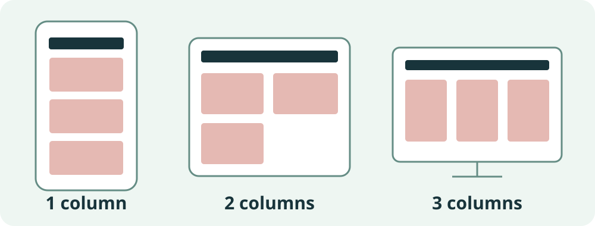

Responsive layouts
A responsive layout adapts to the space available. Start with a clear small-screen layout, then add columns when there is room.

1. Two layout tools
You put the layout rule on a parent. Its children (the elements directly inside) then line up.
2. Flexbox: one direction
Try it: play with Flexbox
Tip: add boxes, then tick wrap and shrink the gap to see the difference.
Use case: a navigation bar
Links are children of nav. One line of CSS puts them in a row.
Try it: nav bar
Edit the code
Result
Change justify-content to space-between or flex-end. In your own site, the HTML goes in each page and the CSS goes in css/style.css.
3. Grid: rows and columns
Try it: play with Grid
Use case: three columns in main
Try it: three cards
Edit the code
Result
Change 3 to 2. Then try 2fr 1fr instead of repeat(3, 1fr).
4. Responsive: change at breakpoints
Write the small screen first: one column. Then use a media query to add columns when the screen is wide enough.
Try it: drag the screen width
.cards {
display: grid;
grid-template-columns: 1fr;
gap: 1rem;
}
@media (min-width: 600px) {
.cards { grid-template-columns: repeat(2, 1fr); }
}
@media (min-width: 900px) {
.cards { grid-template-columns: repeat(3, 1fr); }
}Highlighted rules are the ones the browser is using. At 900px both queries match, and the later one wins.
Phones need <meta name="viewport" content="width=device-width, initial-scale=1"> in the head of every page. Without it, a phone pretends to be a wide screen.
5. Add it to your site
Add this to the end of css/style.css. Keep your earlier CSS.
css/style.css — append after existing rules
nav {
display: flex;
flex-wrap: wrap;
gap: 0.75rem;
align-items: center;
}
.cards {
display: grid;
grid-template-columns: 1fr;
gap: 1rem;
}
@media (min-width: 600px) {
.cards { grid-template-columns: repeat(2, 1fr); }
}
@media (min-width: 900px) {
.cards { grid-template-columns: repeat(3, 1fr); }
}Check your HTML has these classes
<nav aria-label="Main navigation">
<a href="index.html">Home</a> …
</nav>
<div class="cards">
<article class="card">…</article>
<article class="card">…</article>
<article class="card">…</article>
</div>Try it in your own page
- Save, then open Home in the integrated browser.
- Drag the divider to make the preview narrow, then wide. Try about 360, 768 and 1024px.
- Count the columns: 1, 2, then 3.
- Change
gapto2rem. Predict first, then check.
Expected result: the same HTML re-arranges itself. No separate mobile page is needed.
Pause and check
Predict first, then read the feedback.
Spot the error
Why does the wide-screen rule get ignored?
You expect three columns at 1024px, but this media query has an invalid width value.
Broken example — find the mistake
.cards {
display: grid;
grid-template-columns: 1fr;
}
@media (min-width: 900) {
.cards {
grid-template-columns: repeat(3, 1fr);
}
}Need a hint?
Compare the width value with the working media query in the lesson. What follows the number?
Show the corrected code and explanation
@media (min-width: 900px) {
.cards {
grid-template-columns: repeat(3, 1fr);
}
}Test below 900px and at 1024px. Measure the preview width, not the whole monitor.
Try the fix: make the correction in your practice file, save, and explain what changed in your own words.